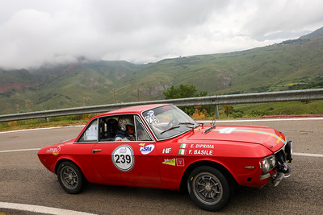
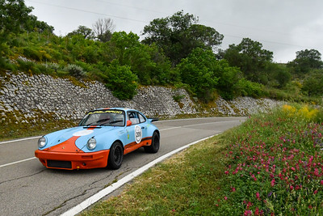

9 maggio 2025

#239 - Basile-Di Prima - Lancia Fulvia HF 1600
Il Targa Florio Historic Rally 2025, terzo round del Campionato Italiano Rally Auto Storiche, ha chiuso la prima tappa sulle strade siciliane tra Palermo e le Madonie.
A guidare la classifica su Porsche Carrera RS è il cefaludese Angelo Lombardo, seguito da Salvatore Riolo e Andrea Smiderle. La mitica gara organizzata da ACI si deciderà sabato 10 maggio con le ultime quattro prove speciali e il traguardo finale al polo universitario di Palermo.
Il Targa Florio Historic Rally 2025 si svolge dall'8 al 10 maggio 2025 tra Palermo e le storiche strade delle Madonie. Luoghi principali dell’evento Partenza ufficiale: Piazza Verdi, nel centro storico di Palermo. Arrivo ufficiale: Polo Universitario di Palermo.
